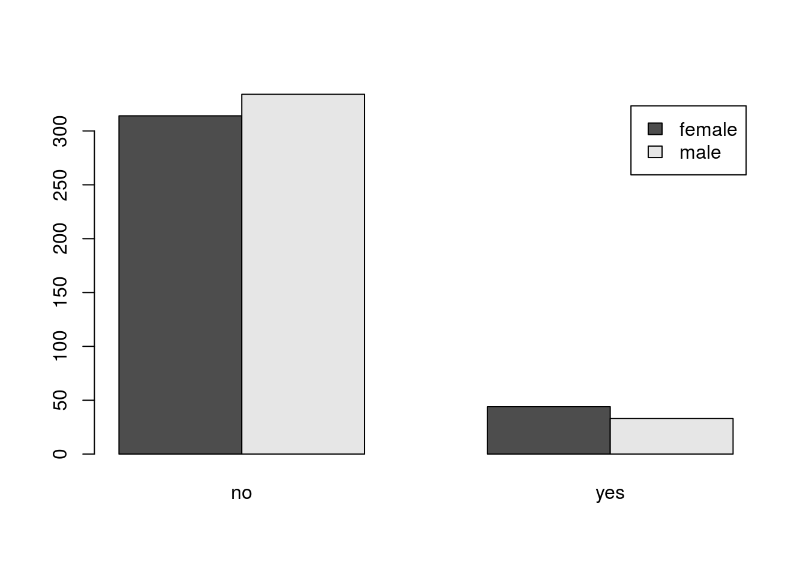

R Chi Squared
by Doc P, 09 Jun 2020
Reference: Marin (R Tutorial 4.7) Chi Squared is a very useful test for evaluating categorical data. Perhaps the greatest difficulty students have with it is determining which version should be used in a particular situation and how to enter the data into R. We will do several examples, showing various ways to evluate information.
Single Classification Chi Squared
We use the single classification test when we have only a single variable of interest (even though there may be several levels of that variable).
For our example I looked up the most recent data on the percentage of voters who are registered as Democrat (40%), Republican (29%), and Independent (28%). Note that the total only adds up to 97%, probably due to rounding.
The Easiest Way
Our first test will evaluate a null hypothesis (Ho) that all three categories are equally represented against the alternative (Ha) that at least one category differs from at least one other.
First, enter a vector of the registrations, and a second vector of the probabilities for each category under the null hypothesis (1/3 of the voters in each category).
registrations <- c(40, 29, 28)
null.probs <- c(1/3, 1/3, 1/3)Then perform a Chi Squared test on these scores.
chisq.test(registrations, p = null.probs)##
## Chi-squared test for given probabilities
##
## data: registrations
## X-squared = 2.7423, df = 2, p-value = 0.2538The parameter “registrations” tells R what scores to evaluate and the parameter “p = null. probs” tells R what probability to assign to the expected outcome for each category.
Our obtained p value of 0.2538 is larger than our customary critical p value of 0.05, so we would retain the null hypothesis. Our data do not provide sufficient evidence for us to say that one party is preferred over another.
Because our probabilities are all equal and this is the default value for R, we could use an even simpler approach and get the same results.
chisq.test(registrations)##
## Chi-squared test for given probabilities
##
## data: registrations
## X-squared = 2.7423, df = 2, p-value = 0.2538Slightly More Complicated
We may not always want the expected outcomes to be equally distributed. If, for example, I wanted to compare the national data given above (40% D, 29% R, 28% I) with registrations in Clarion County, Pennsylvania (33% D, 59% R, 8% I) I would need to use these in the null probability vector.
registrations <- c(40, 29, 28)
null.probs2 <- c(0.33, 0.59, 0.08)
chisq.test(registrations, p = null.probs2)##
## Chi-squared test for given probabilities
##
## data: registrations
## X-squared = 68.71, df = 2, p-value = 1.202e-15There are a couple things of interest in these results. First, we are asking a different question. Our null hypothesis is now “Clarion county voter registrations are representative of the country as a whole” and our alternative is “Clarion county registrations are not representative of the country as a whole.” The second item of interest is that our p value is exceedingly small (p-value = 1.202e-15, means 0.000000000000001202, much less than 0.05). Therefore, we can reject the null hypothesis. Clarion county does not seem to be representative of national voter registration trends.
If you don’t like your p values presented in scientific notation, you can supress it.
registrations <- c(40, 29, 28)
null.probs2 <- c(0.33, 0.59, 0.08)
options(scipen = 999)
chisq.test(registrations, p = null.probs2)##
## Chi-squared test for given probabilities
##
## data: registrations
## X-squared = 68.71, df = 2, p-value = 0.000000000000001202Double Classification Chi Squared
The Double Classification Chi Squared is useful when you want to determine whether two variables are independent.
For our next Chi Squared example we will use the Lung Cap data set provided by Mike Marin. It can be downloaded from D2L if you have not already done so. Once you have the data, read the file in to R and attach it.
We will be looking at the relationship between Gender and Smoking.
We could print out the data set and count alll of the men and womne who either do or do not smoke, but that would be a tedious and error prone task. Instead, we will have R produce a table of these data.
tab <- table(Gender, Smoke)
tab## Smoke
## Gender no yes
## female 314 44
## male 334 33It is also a good idea to create a bar plot of the data to get a visual image of the relationship.
barplot(tab, beside = T, legend=T) 
“beside = T” tells R to put the bars beside each other and “legend = T” tells R to place a legend on the plot. This makes the plot easier to interpret.
To perform the actual analysis we use the “chisq.test” command.
chisq.test(tab, correct = T)##
## Pearson's Chi-squared test with Yates' continuity correction
##
## data: tab
## X-squared = 1.7443, df = 1, p-value = 0.1866“correct = T” tells R to apply Yates correction for continuity. This link - http://en.wikipedia.org/wiki/Yates%27s_correction_for_continuity - is to a page that explains the correction if you are unfamiliar with it. You may want to run the test both with and without the correction just to see if it makes any difference. The default in R is for the correction to be made so, if you do not want the correction you must specify a value of F for the parameter.
A Second Approach to the Double Classification Chi Squared
Unfortunately we do not always have our data in a spreadsheet so we can get R to create a table for us. In this case we need to enter the data manually into a matrix and tell R how the matrix is constructed. We will use the same Smoke vs Gender data but assume that we just have the numbers for each of the four categories. (Female - Non-smoker 314, Female - Smoker 44, Male - Non-smoker 334, Male - Smoker 33)
First, we create the table. We will ue the “rbind command to tell R to enter the numbers by row. Row one will have 314 and 44 while row two will have 334 and 33.”dimnames" simply attaches names to the rows and columns to make it easier to read the table.
M <- as.table(rbind(c(314, 44), c(334, 33)))
dimnames(M) <- list(gender = c("F","M"),
smoke = c("No", "Yes"))
M## smoke
## gender No Yes
## F 314 44
## M 334 33It’s a good idea at this point to take a careful look at your table to see if it is set up the way you want (i.e., the numbers are in the right columns and rows and the names match what you intended to have happen).
Then we simply do the chisq.test on the values in the table.
chisq.test(M)##
## Pearson's Chi-squared test with Yates' continuity correction
##
## data: M
## X-squared = 1.7443, df = 1, p-value = 0.1866Note that, as we used the same numbers we had used in the previous example, our result is the same. That’s the way statistics works. Eitehr way, our p-value of 0.1866 tells us that we do not have enough evidence to claim that there is a relationship between gender and smoking.